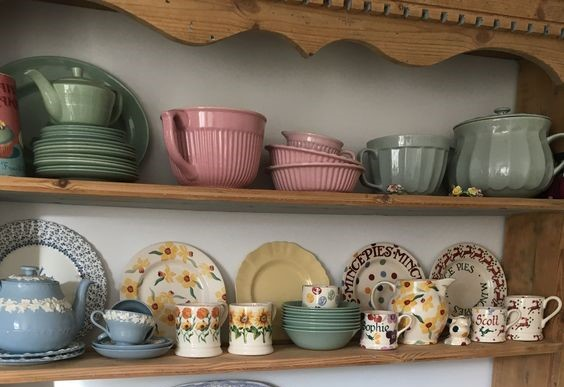
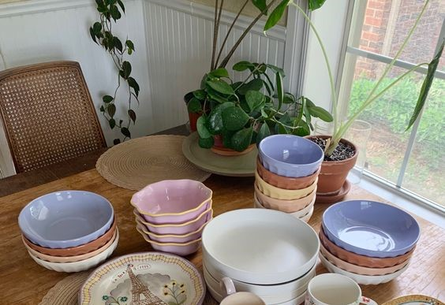
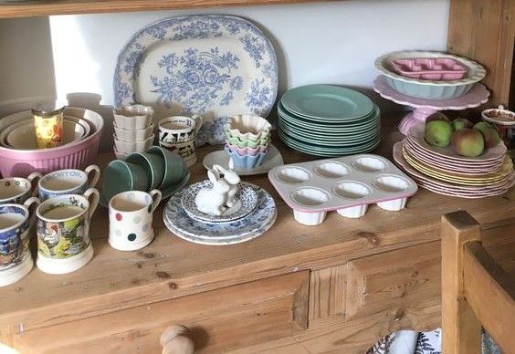
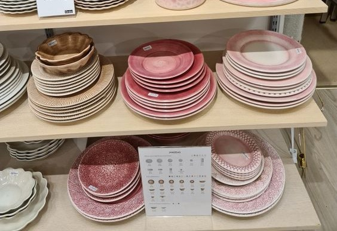

Раздел 1: Что отличает керамические изделия?
Раздел 2: Как ухаживать за посудой?


Что отличает керамические изделия?
- Экологичность. Керамическая утварь появилась намного раньше химической промышленности, а значит,
изготавливается исключительно из натуральных ингридиентов, главным образом, из глины. Такая посуда
полностью экологична и безопасна для человека – она не выделяет никаких вредных веществ при готовке
- Универсальность. Данная посуда прекрасно подходит не только для приготовления пищи (найти модель с
антипригарным покрытием совсем несложно) и ее подачи, но и для хранения приготовленных блюд.
Несмотря на
пористую поверхность непокрытой глазурью керамической посуды, в ней можно спокойно хранить пищу, не
опасаясь ее преждевременной порчи
- Устойчивость к высоким температурам. Глину при обжиге в процессе производства подвергают воздействию
таких температур, которые не снились даже самой мощной домашней варочной панели или духовке, так что
перегрева керамическая посуда не боится совсем.
- Долговечность. Казалось бы, керамика по определению не может быть крепче металла. Парадокс, но при
правильном использовании она может прослужить не меньше чугунной.
К началу страницы



Как ухаживать за посудой?
- Мыть такую посуду можно следующими способами:
- руками
- мягкой губкой с обычным мылом (если есть необходимость)
- в посудомойке (но после одного-двух раз весь цвет уйдет)
- Не стоит применять никаких абразивных моющих средств и металлических мочалок, помните, что молочный
обжиг — это не глазури, поверхность легко поцарапать.
- Черепок после молочного обжига все же сохраняет какую-то остаточную пористость. Поэтому не стоит
такую посуду ни замачивать в раковине, ни оставлять на надолго с остатками жидкой или выделяющей сок
пищи - это чревато тем, что на посуде вырастет плесень. В целом правило очень простое: молоченая
посуда любит сухость и не любит влагу. Помыли - высушили, тогда все будет отлично.
- Как правило, посуда молочного обжига довольно хрупкая, берегите ее от сколов и обращайтесь нежно.
- Не все продукты одинаково полезны для молочного обжига: кофе, чай и вода - да, да, да. Фрукты,
печенье, конфеты, хлеб, сахар, соль -да и еще раз да. Молоко, кефир, какао, треклятый рыбный суп -
лучше не стоит. Так же как не стоит хранить в молоченой мисочке половинку речатого лука.
- Молоченая посуда мгновенно впитывает все запахи, особенно ярко выраженные. Поэтому лучше завести
отдельные чашки для кофе и для чая и не заваривать напитки с сильными ароматизаторами. И не дай вам
бог поесть рыбный суп из тарелки молочного обжига - будете жалеть пару месяцев, пока запах не
выветрится.